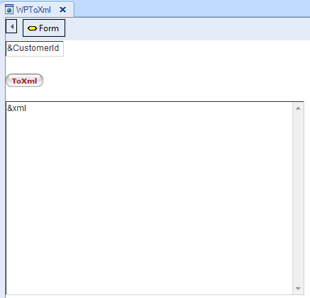
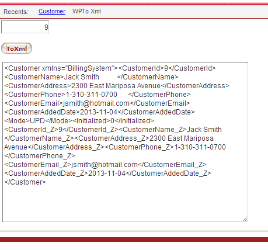

This method can be applied to a variable based on a business component type of a transaction, in order to convert the data stored in it, to an XML structure with a Tag for each transaction attribute. Besides, for each transaction attribute a Tag_Z will be created with its old value. Syntax&StringVble = &VbleBasedOnBCType.ToXml() Where: &StringVble &VbleBasedOnBCType
ExampleLet's suppose we define the following transaction as Business Component (by setting its Business Component property = True):
Customer
{
CustomerId* (Autonumber property = True)
CustomerName
CustomerAddress
CustomerPhone
CustomerEmail
CustomerAddedDate
}
Customer rule: Default(CustomerAddedDate,&today); Accordingly, a business component data type of the Customer transaction is automatically created in the KB and we are able to define in any object, a variable of the new type created. Thus, in a web panel we define a variable named &customer based on the Customer type. The objective of the web panel we are proposing is allow the user to enter a customer Id value. Then, by pressing a button, the event associated to the button will load in memory (in the &customer business component variable) the customer data stored in the database associated to the customer id entered by the user. Next, the ToXml method will be applied to the &customer variable, in order to convert the customer data to an XML format and it will be showed in the web panel form. To achieve this, we define in the web panel also these variables: &CustomerId: Based on CustomerId attribute &xml: Character(200) and we design the web panel form like this:  The following code is associated to the web panel button:
Event Enter
&customer.Load(&CustomerId)
&xml=&customer.ToXml()
Endevent
In run-time, let's suppose the user enter in the &CustomerId variable the value: 9. Then he press the button, and the customer data is loaded in the &customer variable and converted to xml format, like the following image shows: 
See also |
| Backlinks | |
| Toc:Business Component | Business Component FromXml method |